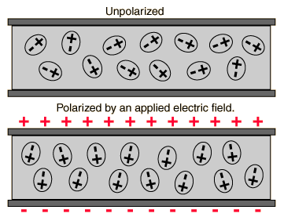
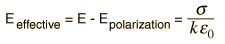

Polarization of Dielectric
If a material contains polar molecules, they will generally be in random orientations when no electric field is applied. An applied electric field will polarize the material by orienting the dipole moments of polar molecules.
|
This decreases the effective electric field between the plates and will increase the capacitance of the parallel plate structure. The dielectric must be a good electric insulator so as to minimize any DC leakage current through a capacitor.
|

|
The presence of the dielectric decreases the electric field produced by a given charge density.

The factor k by which the effective field is decreased by the polarization of the dielectric is called the dielectric constant of the material.
|
Index
Capacitor Concepts
Dipole concepts |